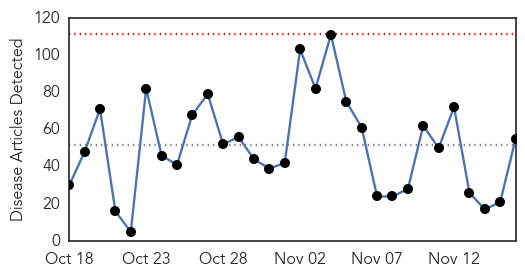
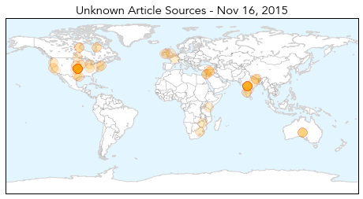

Ebola
30-Day Web Trend
0 alerts, 0 warnings

30-Day Twitter Trend
15 alerts, 12 warnings

Article Locations

Article Confidences

Top Articles:
- 0.997
- Jubilation In Freetown As Sierra Leone Declared Ebola-Free
- 0.989
- Bye Bye Ebola! Eradication spurs rap song in Sierra Leone.
- 0.988
- A Post-Ebola Society
- 0.974
- Alumna studies influenza virus for CDC
- 0.960
- William P.J. Lynch Jr.comWilliam P.J. Lynch Jr.com
- 0.956
- Building Defences Against Future Ebola Outbreaks
- 0.935
- Daily Podcast – November 16, 2015
- 0.741
- Aids, Swine and Avian Flu, Ebola seem to be the predicted first and fifth plagues of Apocalypsis-Rev
- 0.703
- ExxonMobil to Drill Offshore Post-Ebola Liberia
- 0.606
- HBO Documentary Films acquires the riveting 'Body Team 12'
Top Tweets:
- 0.998
- Ebola Outbreak News - https://t.co/bnCj88U7Im ebola
- 0.996
- Guinea Health Unit Reports No Confirmed Ebola Cases for 17 Days - https://t.co/D7fK4OVaTT ebola
- 0.995
- ebola.MP3 - https://t.co/66b8INUiSL ebola
- 0.995
- Guinea says has no Ebola cases after last patient recovers - Reuters https://t.co/i52GXRoOyy ebola EVD
- 0.995
- Guinea Health Unit Reports No Confirmed Ebola Cases for 17 Days - Bloomberg https://t.co/FrPbAos2JK ebola EVD
- 0.986
- Guinea releases last 68 people from Ebola quarantine - https://t.co/8ozfwwePSS ebola
- 0.985
- The Ebola Files 23 - https://t.co/jzbiB1GYym ebola
- 0.980
- RT: Confirmed Ebola virus disease cases by month. 1 reported by so far for November. Just 1. https://t.co/TqDxyGwfM6
- 0.979
- Ebola outbreak in West Africa global emergency - https://t.co/uKEXAqGtHk - https://t.co/rRKpBQc2Kr ebola
- 0.978
- Call for Bloggers: Africa Against Ebola - https://t.co/gLbQ6C2hF9 ebola
- 0.977
- Optofluidic Systems Detect Ebola, Flu Viruses - https://t.co/F964J2C0nd https://t.co/X067dtfh3z ebola EVD
- 0.971
- Republican debate ebola - https://t.co/UGGxfJUvLT ebola
- 0.971
- Ebola la la - https://t.co/V1U60dH7Y2 ebola
- 0.971
- A Post-Ebola Society - https://t.co/8G3dQiTyWG ebola
- 0.970
- Ebola 'Will Return' To Sierra Leone - https://t.co/TAWRtko8ZG ebola
- 0.969
- Air Jordan Ebola 4 - https://t.co/BTXsDj3MtD ebola
- 0.967
- How to cure Ebola - https://t.co/NwvhiQuxd4 ebola
- 0.966
- UF professor finds effective Ebola vaccine - https://t.co/y2Lh1a1Gpi ebola
- 0.965
- The Ebola Files Manga - Chapter 23 - https://t.co/utimSxBJK2 ebola
- 0.963
- Second Ebola test negative in Brazil man, patient released from isolation - https://t.co/2tLwvtcNU8 ebola
- 0.962
- Home Decor In Dallas Ebola Emergency Medical Services France - https://t.co/AR0KhMc67i ebola
- 0.962
- Guinea health unit reports no confirmed Ebola cases for 17 days!! https://t.co/c59VsF4Vku TackleEbola
- 0.960
- African Ebola Task Force Launches Food Drive for Ebola Orphans & Neglected Children in West ... - https://t.co/G4VmBXvbB7 ebola
- 0.956
- can you stop Ebola from spreading? - https://t.co/QpUlxP8XIJ ebola
- 0.955
- A soccer club for Ebola survivors is fighting stigmas in Sierra Leone - Daily Maverick https://t.co/cFGW18dU9R ebola EVD
- 0.953
- Fashola: The Man Who Ended Ebola - https://t.co/dYOgx672wn ebola
- 0.952
- Parliament okays Ebola Vaccine Trial at Hohoe - https://t.co/S5MhtluOu2 ebola
- 0.951
- Call for Bloggers: Africa Against Ebola -BLOGGING FOR A CAUSE - https://t.co/knytincs90 ebola
- 0.950
- Ebola-Free: Sierra Leone Declared Free of That Disease - https://t.co/hMOww93Zxu ebola
- 0.947
- Ebola Pop Hold It Down Remix - https://t.co/nbhigFs5vw ebola
- 0.944
- Fashola: The Man Who Ended Ebola - THISDAY Live https://t.co/RRHq27gpkL ebola EVD
- 0.939
- New york times ebola - https://t.co/cgZU4dRTRY ebola
- 0.925
- Interferon-γ Inhibits Ebola Virus Infection https://t.co/gwLMMPLuTd
- 0.915
- Sugar Ball Blocks Ebola - https://t.co/GlihlsSjAE ebola
- 0.913
- UF professor finds effective Ebola vaccine - The Independent Florida Alligator https://t.co/SCvbgA4zfO ebola EVD
- 0.902
- I have Ebola la la la - https://t.co/hflNLww39Y ebola
- 0.900
- Ebola nurse Pauline Cafferkey now 'critically ill' - Page 2 - https://t.co/WmhOEuQwCs ebola
- 0.898
- Resistance ….Volunteers Recount Memories Of Burnt Ebola Victims - https://t.co/Uc74W19tA2 ebola
- 0.893
- Corey, US hospitals vaccinate people with Ebola Virus Vaccine the media isn't talking about it though.
- 0.892
- Ebola the new STD
- 0.879
- A Post-Ebola Society - New York Times https://t.co/sTLZKYqyIh ebola EVD
- 0.879
- A Post-Ebola Society - New York Times https://t.co/gdCQRJAzP4 ebola EVD
- 0.868
- 6 - https://t.co/fVtjwRvL3t ebola
- 0.868
- Ebola https://t.co/JiskWgGHk2
- 0.851
- The Financialization of Ebola https://t.co/iPWgVUlOJ8
- 0.841
- 'Hoo boy'! Mark Pryor's Ebola flub inspires 'perfect' potential GOP ad - https://t.co/un2dxRL72z ebola
- 0.830
- Sugar Ball Blocks Ebola - The Biological SCENE https://t.co/44IOcDzCU3 ebola EVD
- 0.823
- Boston a great town with one of the best Ebola treatment facilities for refugees with Ebola
- 0.809
- Is it likely to get Ebola in the UK? - https://t.co/2X28F9iNvB ebola
- 0.801
- Exxon Mobil to drill offshore Liberia - https://t.co/kC3MB3hIAc ebola
Showing top 50 tweets...
Unknown
30-Day Web Trend
0 alerts, 0 warnings

30-Day Twitter Trend
0 alerts, 0 warnings

Article Locations
Article Confidences
Top Articles:
- 0.996
- Flu Activity Increasing In Nebraska
- 0.990
- Early flu outbreak kills two Iowans, experts urge shots
- 0.978
- Parts of India experience an increase in leptospirosis
- 0.967
- Often free, flu shots can save billions for consumers, businesses
- 0.959
- NunatsiaqOnline 2015-11-16: NEWS: Voluntary TB clinic to run until mid-December in Nunavik community
- 0.958
- Hospital to give flu shots on November 17
- 0.834
- Rare TB case in US shows difficulty diagnosing, treating children
- 0.819
- WARNING: Stay away from hospital if you have diarrhoea or vomiting
- 0.809
- Child with rare drug-resistant TB successfully treated by US doctors
- 0.790
- OIE scientists call for reduction of rinderpest virus stores
- 0.761
- A Man with a Lifetime Medical Mission
- 0.747
- Protection for Somali children with new vaccine against deadly disease - Somalia
- 0.727
- Health Department offering flu clinic
- 0.722
- Child’s case serves as ‘wake-up call’ to drug-resistant TB, doctors say
- 0.719
- Rare TB case shows difficulty diagnosing, treating children
- 0.706
- News Centre
- 0.695
- Syphilis outbreak in northern Manitoba
- 0.695
- Rare TB case shows difficulty diagnosing, treating children
- 0.695
- Soweto health workers not paid amid 'admin problems'
- 0.692
- Rare TB case shows difficulty diagnosing, treating children
- 0.690
- Rash of E. coli cases highlights foodborne illness problem
- 0.685
- UC Health alerting patients about leaked medical records
- 0.675
- Pharmacies in capital lack vital drugs
- 0.666
- Water woes in Zimbabwe’s urban areas in the middist Of plenty
- 0.648
- Toddler, 2, Returns From India With Rare Case Of Tuberculosis, Highlights Concerns Of Drug-Resistant TB Strains
- 0.640
- 580 CFRA News Talk Radio :: HEALTHBEAT: Tot's rare hard-to-treat TB highlights need to improve care for children worldwide :: News
- 0.628
- Rare TB case shows difficulty diagnosing, treating children
- 0.623
- Eight bat attacks prompt health warning for Hunter residents
- 0.615
- It was launched a public information campaign to try to keep chronic wasting disease from reaching
- 0.610
- DOH-Caraga strengthens campaign to eliminate filariasis, malaria
- 0.607
- 4,000 Israelis a year die from resistant superbugs
- 0.605
- NHS launches winter campaign to keep people out of hospital
- 0.603
- Obama: Refugee crisis should not be equated with terrorism
- 0.603
- French police raid dozens of homes in search of suspected jihadists
- 0.603
- Hollande to hold talks with Kerry on Paris attacks
- 0.603
- Paris attack probe turns to Belgium’s ‘Islamist pit stop’ of Molenbeek
- 0.603
- Is ‘the Belgian’ Abou Omar behind the Paris attacks?
- 0.602
- Eight bat attacks prompt health warning for Hunter residents
- 0.599
- IPPF’s humanitarian program: The SPRINT Initiative is providing crucial medical and sexual and reproductive (SRH) health services to #TyphoonKOPPU affected areas in Philippines - Philippines
- 0.593
- Naugatuck Valley Health District Awarded National Accreditation by the Public Health Accreditation Board
- 0.593
- How the Modi government is fuelling a dangerous comeback of drug-resistant microbes
- 0.586
- NMA to pile pressure on govt to avert crisis in health sector
- 0.578
- If you think you’re in poor health, you’re more likely to catch a cold
- 0.577
- Child with drug-resistant TB successfully treated at Johns Hopkins Children's Center
- 0.565
- African health experts pledge action on non-communicable diseases - Xinhua
- 0.563
- ‘Ireland is on the brink of a perfect storm in our health services’
- 0.563
- Ads saying Cold-FX and flu shot work 'better together' questioned by experts
- 0.561
- Raigmore Hospital ward stays shut after vomiting bug outbreak
- 0.550
- Ask Hutch: Law ads overstate ease of big wins; from small trains to zoo trains, railcars and visits on readers’ minds
- 0.548
- Public Health Accreditation Board Awards Five-Year Accreditation to 17 Health Departments
Showing top 50 articles...
Top Tweets:
- 0.650
- RT: Don’t wait – get the flu vaccine and protect yourself from seasonal flu. https://t.co/F9Ds8DwofQ HealthySelf
- 0.564
- This season's Flu vaccine has been updated to better match circulating viruses. https://t.co/FDiQa69bvx
- 0.520
- RT: "Cambio" será sólo una palabra hasta el momento en que la conviertas en acción.
- 0.518
- Three year old Ayzlee McCarthy passed away last December from complications of the flu. Read her story now. https://t.co/gjN46KX12Q